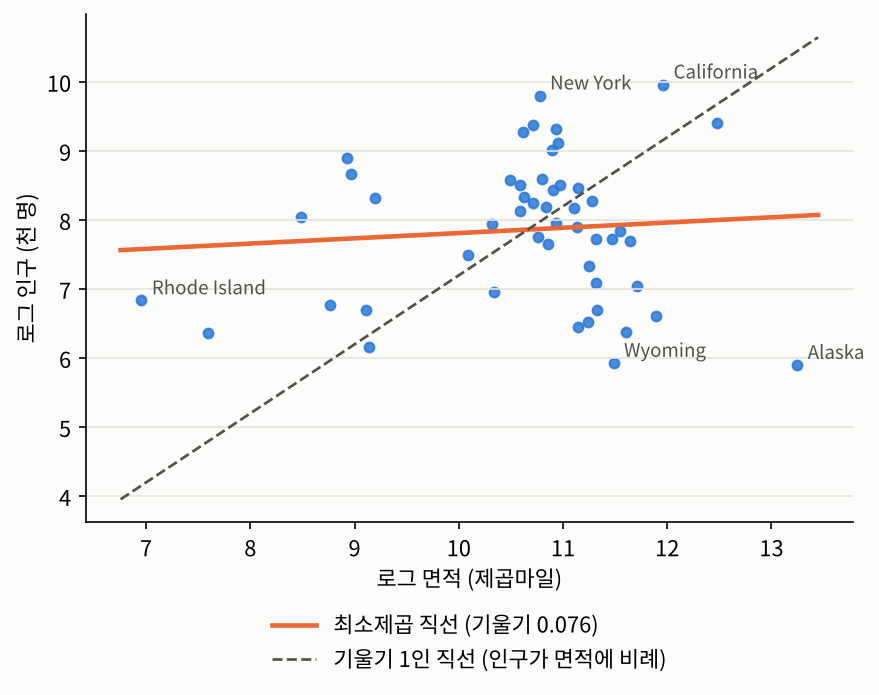

2.1 계수의 신뢰구간과 t-검정
2장 선형 모델에서의 추론 · 계수 하나는 얼마나 정확한가
들어가며
1.2에서 statsmodels로 선형 모델을 처음 적합했을 때, 출력 표에는 계수 추정값 말고도 std err, t, P>|t|, [0.025 0.975]라는 열이 있었습니다. 그때는 첫 열만 읽고 나머지는 2장으로 미루었습니다. 이번 글에서 그 나머지 열을 모두 읽을 수 있게 됩니다.
방법은 기초 통계학에서 정규 모집단의 평균에 대해 t-구간과 t-검정을 만들던 것과 똑같습니다. 그때는 표본 평균이 정규분포를 따르고, 표본 분산이 카이제곱분포를 따르고, 둘이 독립이라는 세 가지 사실이 필요했습니다. 선형 모델에서는 정리 1.5.8이 같은 세 가지 사실을 줍니다.
표준오차와 t-통계량
정규 오차 \(\boldsymbol\varepsilon \sim \mathcal{N}(\mathbf{0}, \sigma^2\mathbf{I})\) 아래에서 최소제곱 추정량은 \(\hat{\boldsymbol\beta} \sim \mathcal{N}\big(\boldsymbol\beta, \sigma^2(\mathbf{X}^t\mathbf{X})^{-1}\big)\)를 따르므로, 그 \(j\)번째 성분은
\[\hat\beta_j \sim \mathcal{N}\big(\beta_j, \, \sigma^2_{\hat\beta_j}\big), \qquad \sigma^2_{\hat\beta_j} := \sigma^2 \big[(\mathbf{X}^t\mathbf{X})^{-1}\big]_{jj}\]
입니다. 여기서 \([\,\cdot\,]_{jj}\)는 행렬의 \(j\)번째 대각 성분입니다. 표준화하면 \((\hat\beta_j - \beta_j)/\sigma_{\hat\beta_j} \sim \mathcal{N}(0, 1)\)이지만, \(\sigma\)를 모르니 이 식을 그대로 쓸 수는 없습니다. 기초 통계학에서 했던 것처럼 \(\sigma\) 자리에 추정값 \(\hat\sigma\)를 넣습니다.
표준오차는 “이 추정값이 데이터에 따라 대략 얼마나 흔들리는가”를 데이터만으로 추정한 값입니다. 그 대가로 분포가 정규분포에서 조금 바뀝니다.
자유도가 \(n - p\)라는 점만 빼면 기초 통계학의 t-통계량과 같은 모양입니다. 자유도가 크면 t-분포는 표준정규분포와 거의 같아지므로, 관측값이 수천 개인 임대료 데이터에서는 사실상 정규분포를 쓰는 것과 차이가 없습니다. 관측값이 적을 때는 t-분포의 두꺼운 꼬리가 \(\sigma\)를 추정하면서 생긴 추가 불확실성을 반영해 줍니다.
계수 하나의 신뢰구간
t-통계량의 분포를 알면 신뢰구간은 바로 나옵니다. \(t_{q}(m)\)을 자유도 \(m\)인 t-분포의 \(q\) 분위수라고 하겠습니다.
1장의 위치 더미가 들어간 임대료 모델로 확인해 보겠습니다.
import numpy as np
import pyreadr
import statsmodels.formula.api as smf
from scipy import stats
rent = pyreadr.read_r("rent99.rda")["rent99"]
location = rent["location"].astype(int)
rent["glocation"] = (location == 2).astype(int)
rent["tlocation"] = (location == 3).astype(int)
fit = smf.ols("rentsqm ~ glocation + tlocation + area + yearc", data=rent).fit()
print(fit.summary().tables[1])==============================================================================
coef std err t P>|t| [0.025 0.975]
------------------------------------------------------------------------------
Intercept -66.0144 3.509 -18.814 0.000 -72.894 -59.135
glocation 0.7358 0.080 9.205 0.000 0.579 0.893
tlocation 1.7864 0.246 7.270 0.000 1.305 2.268
area -0.0288 0.002 -17.367 0.000 -0.032 -0.026
yearc 0.0382 0.002 21.492 0.000 0.035 0.042
==============================================================================[0.025 0.975] 열이 각 계수의 95% 신뢰구간입니다. 면적의 계수로 이 값을 직접 계산해 보겠습니다.
X = fit.model.exog # 디자인 매트릭스
n, p = X.shape
sigma2_hat = np.sum(fit.resid ** 2) / (n - p) # 1.5의 오차 분산 추정값
se = np.sqrt(sigma2_hat * np.diag(np.linalg.inv(X.T @ X)))
t_q = stats.t.ppf(0.975, df=n - p) # t(n-p) 분포의 0.975 분위수
j = 3 # area의 위치 (0: 절편)
b = fit.params.iloc[j]
print(f"n - p = {n - p}, t 분위수 = {t_q:.4f}")
print(f"area: 추정값 {b:.5f}, 표준오차 {se[j]:.5f}")
print(f"95% 신뢰구간: [{b - t_q * se[j]:.5f}, {b + t_q * se[j]:.5f}]")
print(f"검정통계량 t = {b / se[j]:.3f}, p-값 = {2 * stats.t.sf(abs(b / se[j]), df=n - p):.2e}")n - p = 3077, t 분위수 = 1.9607
area: 추정값 -0.02880, 표준오차 0.00166
95% 신뢰구간: [-0.03206, -0.02555]
검정통계량 t = -17.367, p-값 = 1.60e-64출력 표의 std err, 신뢰구간과 같은 값이 나옵니다. 자유도가 3077이라 t 분위수가 표준정규분포의 1.96과 거의 같다는 것도 보입니다. 마지막 줄의 t와 p-값은 잠시 뒤에 설명하겠습니다.
이 구간은 이렇게 읽습니다. 건축 연도와 위치가 같을 때 면적이 1㎡ 넓은 아파트의 ㎡당 월세가 평균적으로 얼마나 다른지, 그 참값은 95% 신뢰수준에서 \(-0.032\)유로와 \(-0.026\)유로 사이에 있다고 말할 수 있습니다. 기초 통계학에서처럼 “95%”는 이 구간 하나가 참값을 포함할 확률이 아니라, 같은 방법으로 데이터를 모아 구간을 만드는 일을 되풀이할 때 그중 95%가 참값을 포함한다는 뜻입니다.
기초 통계학과의 연결도 확인해 두겠습니다. 절편만 있는 모델 \(y_i = \mu + \varepsilon_i\)에서는 \([(\mathbf{X}^t\mathbf{X})^{-1}]_{11} = 1/n\)이고 \(\hat\sigma\)는 표본 표준편차 \(s\)이므로, 정리 2.1.3의 구간은 \(\bar{y} \pm t_{1-\alpha/2}(n-1)\, s/\sqrt{n}\), 즉 정규 모집단의 평균에 대한 t-구간이 됩니다.
y = rent["rentsqm"].to_numpy()
mean_model = smf.ols("rentsqm ~ 1", data=rent).fit() # 절편만 있는 모델
print(mean_model.conf_int().round(4))
n = len(y)
half = stats.t.ppf(0.975, df=n - 1) * y.std(ddof=1) / np.sqrt(n)
print(f"기초 통계학의 t-구간: [{y.mean() - half:.4f}, {y.mean() + half:.4f}]") 0 1
Intercept 7.0252 7.1973
기초 통계학의 t-구간: [7.0252, 7.1973]유의성 검정
회귀 분석에서 가장 자주 묻는 질문은 “이 공변량이 반응과 관련이 있는가”입니다. 다른 공변량이 같을 때 \(x_j\)가 달라져도 반응의 기대값이 달라지지 않는다면 \(\beta_j = 0\)이므로, 이 질문은 다음 가설로 쓸 수 있습니다.
\[H_0 : \beta_j = 0 \qquad \text{대} \qquad H_1 : \beta_j \ne 0\]
\(H_0\)가 참이면 정리 2.1.2에서 \(\beta_j = 0\)을 넣은 t-통계량
\[T_j := \frac{\hat\beta_j}{\hat\sigma_{\hat\beta_j}}\]
가 \(t(n-p)\)를 따릅니다. 추정값이 표준오차 몇 개만큼 0에서 떨어져 있는지를 재는 값입니다. 이 값이 0에서 많이 떨어져 있을수록 \(H_0\)와 맞지 않는 데이터입니다. 유의수준 \(\alpha\)에서 판단하는 방법은 세 가지가 있고, 셋은 언제나 같은 결론을 줍니다.
- 기각역: \(|T_j| > t_{1-\alpha/2}(n-p)\)이면 \(H_0\)를 기각합니다.
- p-값: \(H_0\) 아래에서 지금보다 더 극단적인 t-통계량이 나올 확률 \(2\,\mathbb{P}\big(t(n-p) \ge |T_j|\big)\)이 \(\alpha\)보다 작으면 \(H_0\)를 기각합니다. statsmodels 출력의
P>|t|열이 이 값입니다. - 신뢰구간: \((1-\alpha)\) 신뢰구간이 0을 포함하지 않으면 \(H_0\)를 기각합니다.
위의 임대료 모델에서 면적의 t-통계량은 \(-17.37\)로, 추정값이 0에서 표준오차 17개 이상 떨어져 있습니다. p-값은 \(1.6 \times 10^{-64}\)로 사실상 0이고, 신뢰구간도 0을 포함하지 않습니다. 이런 결과를 보통 “면적의 효과는 통계적으로 유의하다(statistically significant)”고 말합니다. 출력 표의 다른 계수들도 모두 p-값이 0.000으로 표시되어 있으니, 이 모델의 공변량은 모두 5% 유의수준에서 유의합니다.
유의성에 대해 두 가지를 덧붙이겠습니다.
- 유의하다는 것은 크다는 뜻이 아닙니다. 면적의 효과는 1㎡당 0.03유로에 불과하지만 관측값이 3082개나 되어 아주 정확하게 추정되었기 때문에 유의합니다. 효과가 실제로 중요한지는 p-값이 아니라 신뢰구간과 내용을 보고 판단해야 합니다.
- 유의하지 않다는 것은 효과가 없다는 뜻이 아닙니다. 데이터가 \(\beta_j = 0\)과 맞지 않는다고 말할 만큼 충분한 증거를 주지 못했다는 뜻일 뿐입니다. 다음 예에서 이 점을 자세히 보겠습니다.
검정과 신뢰구간의 쌍대성
위의 세 번째 방법은 사실 우연이 아닙니다. 검정과 신뢰구간 사이에는 더 일반적인 관계가 있습니다. 가설을 \(H_0 : \beta_j = b\)처럼 0이 아닌 값 \(b\)로 바꿔도, \(H_0\) 아래에서
\[\frac{\hat\beta_j - b}{\hat\sigma_{\hat\beta_j}} \sim t(n-p)\]
이므로 똑같이 검정할 수 있습니다.
그러니까 신뢰구간은 데이터와 맞는 모든 값의 목록입니다. 구간 안의 값은 어느 것을 가설로 세워도 기각되지 않고, 구간 밖의 값은 모두 기각됩니다. 그래서 신뢰구간 하나가 수많은 검정의 결과를 한꺼번에 알려 줍니다.
예: 미국 주의 면적과 인구
1975년 무렵 미국 50개 주의 인구(천 명)와 면적(제곱마일) 데이터로 확인해 보겠습니다.1 면적이 넓은 주일수록 인구도 많을까요? 면적과 인구는 모두 오른쪽으로 크게 치우친 변수라서 양쪽에 로그를 취해 모델을 세웁니다.
\[\log(\text{인구}_i) = \beta_0 + \beta_1 \log(\text{면적}_i) + \varepsilon_i\]
1.2에서 본 곱셈 모형으로 돌려 쓰면 \(\text{인구} = e^{\beta_0}\cdot\text{면적}^{\beta_1}\cdot e^{\varepsilon}\)이므로, \(\beta_1\)은 “면적이 1% 넓으면 인구가 대략 \(\beta_1\)% 많다”는 탄력성(elasticity)으로 읽을 수 있습니다. 특히 \(\beta_1 = 1\)이면 인구가 면적에 비례하는, 즉 인구 밀도가 주마다 같은 경우이고, \(\beta_1 = 0\)이면 면적과 인구가 관계없는 경우입니다.
import numpy as np
import pandas as pd
import statsmodels.formula.api as smf
url = "https://raw.githubusercontent.com/vincentarelbundock/Rdatasets/master/csv/datasets/state.x77.csv"
states = pd.read_csv(url)
states["log_pop"] = np.log(states["Population"]) # 인구 (천 명)
states["log_area"] = np.log(states["Area"]) # 면적 (제곱마일)
fit = smf.ols("log_pop ~ log_area", data=states).fit()
print(f"n = {int(fit.nobs)}, R^2 = {fit.rsquared:.4f}")
print(fit.params.round(4))
print("99% 신뢰구간:")
print(fit.conf_int(alpha=0.01).round(4))
for b in [0, 1]:
test = fit.t_test(f"log_area = {b}")
print(f"H0: 기울기 = {b} -> t = {test.tvalue.item():.3f}, p-값 = {test.pvalue.item():.2e}")n = 50, R^2 = 0.0073
Intercept 7.0514
log_area 0.0762
dtype: float64
99% 신뢰구간:
0 1
Intercept 3.3627 10.7401
log_area -0.2678 0.4201
H0: 기울기 = 0 -> t = 0.594, p-값 = 5.55e-01
H0: 기울기 = 1 -> t = -7.205, p-값 = 3.57e-09
기울기의 추정값은 0.076이고, 99% 신뢰구간은 \([-0.268, 0.420]\)입니다. 쌍대성으로 읽으면 다음과 같습니다.
- 구간이 0을 포함하므로 \(H_0 : \beta_1 = 0\)은 1% 유의수준에서 기각되지 않습니다. 실제로 p-값은 0.555로, 5% 유의수준에서도 기각되지 않습니다. 이 데이터만으로는 “넓은 주일수록 인구가 많다”고 말할 근거가 없습니다.
- 구간이 1을 포함하지 않으므로 \(H_0 : \beta_1 = 1\)은 기각됩니다. p-값은 \(3.6 \times 10^{-9}\)입니다. 인구가 면적에 비례한다는 가설은 데이터와 전혀 맞지 않습니다. 그림에서도 기울기 1인 점선은 점들의 흩어짐과 어긋납니다.
첫 번째 결과를 “면적은 인구와 관계가 없다”로 읽으면 안 됩니다. 신뢰구간에는 0뿐 아니라 0.4처럼 꽤 큰 양의 탄력성도 들어 있습니다. 데이터가 말해 주는 것은 “탄력성은 \(-0.27\)에서 \(0.42\) 사이 어딘가일 것이고, 그 범위 안에서는 정확히 어디인지 알 수 없다”는 것입니다. 결정계수가 0.007인 데서 보듯, 주의 인구는 면적보다 기후, 역사, 산업 같은 다른 요인에 훨씬 크게 좌우됩니다.
정리
이번 글에서는 회귀계수 하나에 대한 추론을 다루었습니다.
- 계수 추정량의 표준오차는 \(\hat\sigma_{\hat\beta_j} = \hat\sigma\sqrt{[(\mathbf{X}^t\mathbf{X})^{-1}]_{jj}}\)이고, 정규 오차 아래에서 \((\hat\beta_j - \beta_j)/\hat\sigma_{\hat\beta_j}\)는 \(t(n-p)\)를 따릅니다.
- 이로부터 \((1-\alpha)\) 신뢰구간 \(\hat\beta_j \pm t_{1-\alpha/2}(n-p)\,\hat\sigma_{\hat\beta_j}\)와 \(H_0 : \beta_j = 0\)에 대한 t-검정이 나옵니다. 절편만 있는 모델에서는 기초 통계학의 t-구간과 같습니다.
- 기각역, p-값, 신뢰구간의 세 판단 방법은 같은 결론을 줍니다. 더 일반적으로 신뢰구간은 기각되지 않는 가설값의 모임이라는 쌍대성이 성립합니다.
- 유의하다는 것은 효과가 크다는 뜻이 아니고, 유의하지 않다는 것은 효과가 없다는 뜻이 아닙니다. 신뢰구간이 둘 다를 판단하는 데 더 많은 정보를 줍니다.
계수 하나만으로는 답할 수 없는 질문도 있습니다. 위치 효과는 더미 두 개로 표현되는데, “위치가 월세와 관련이 있는가”를 물으려면 두 계수를 함께 검정해야 합니다. 다음 글에서는 여러 계수에 대한 가설을 하나의 틀로 다루는 F-검정을 살펴보겠습니다.
연결되는 개념
- \(\leftarrow\) 이전 개념: 2 선형 모델에서의 추론
- \(\rightarrow\) 다음 개념: 2.2 일반 선형 가설과 F-검정
Footnotes
R에 기본으로 들어 있는
state.x77데이터로, 미국 상무부 인구조사국의 Statistical Abstract of the United States(1977)에 실린 자료를 모은 것입니다. 여기서는 Rdatasets 저장소에서 CSV로 내려받아 씁니다.↩︎